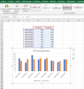

Les graphiques
Définition :
Les graphiques constituent une méthode simple et visuellement agréable pour mettre en valeur les comparaisons, motifs et tendances que des données brutes ne laissent pas apparaître. Ainsi, vous n'avez plus besoin d'analyser plusieurs colonnes de chiffres dans une feuille de calcul. Vous pouvez voir d'un seul coup d'œil si, par exemple, les ventes trimestrielles diminuent ou augmentent, ou encore en quoi les ventes réelles diffèrent des ventes prévisionnelles.
Méthode : Créer un graphique
Méthode : Ajouter ou modifier un titre
Méthode : Afficher ou masquer une légende
Méthode : Ajouter un axe secondaire
Simulation :
Après avoir entré les données, sélectionner les cellules C3:E11 puis le menu insertion graphique histogramme. Vous constatez que les lignes sont en abscisse (axe horizontale) et les colonnes en ordonnées (axe verticale). La légende est construite à partir du titre des colonnes. Ajouter un titre.
NB: Mettre les valeurs au format date.
Graphique obtenu :